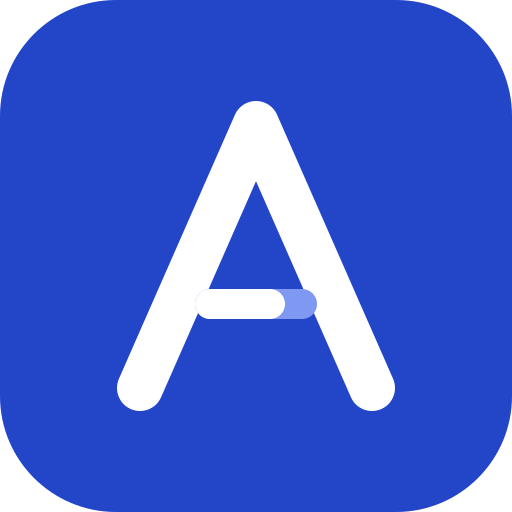

Your private repository
- companies.yml
- the employers you'd join
- cv.md
- your resume
- criteria.md
- how you judge a role, in your words
- settings.yml
- titles, places, thresholds, model
- levels.md · pay.yml
- optional: your level ladder, pay you know of
Saved back after every run
- data/jobs.json
- memory: every role and its score
- data/feedback.json
- your calls, with each posting
→
Every morning, in GitHub Actions khubli/axia@v1
1
Read
Each employer's own careers site, through the public feeds its pages use.
WorkdayGreenhouseLeverAshbySmartRecruitersOracleSuccessFactors+4 more
2
Filter
Your titles and places, free. Titles your words miss get a second look from the model, which can only let roles in. What's left out is listed for spot checks.
3
Score
The full posting against your resume and criteria: 0–100, what fits, the gaps, plus a level label and a pay range in the same answer.
Claude subscriptionAnthropic APIOpenRouterOpenAI-compatible
4
Remember
New, open, closed, reopened. Each role scored once and announced once.
→
You

Your dashboard- On your domain, behind your Cloudflare login
- Login checked after every publish; no login, no data
- What changed in the last run, at the top
- Mark roles Applied, Shortlist or Not for me
- Installs as an app; works offline
Telegram or email
- Only roles that newly clear your bar
- Problems that last, once
- A silent weekly check-in
↺ Once a week
Your calls the scores disagree with→the model proposes an edit to criteria.md→your judged roles are scored with and without it→a pull request, only if it agrees with you more often